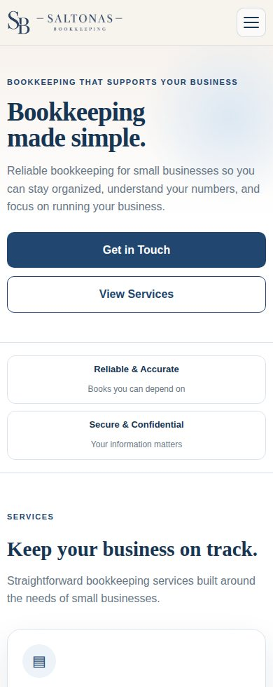

01
Páginas para negocios
Sitios que explican tus servicios, generan confianza y facilitan que tus clientes te llamen o escriban.
Cuéntanos tu idea →Diseño web para negocios locales · Oregón y Washington
Creamos páginas web modernas y prácticas para que tus clientes te encuentren, conozcan tus servicios y puedan comunicarse contigo. Soluciones para negocios reales, sin complicaciones innecesarias.
Nuestros servicios
Ya sea tu primera página web o una mejor manera de recibir cotizaciones, nos enfocamos en lo que tu negocio necesita.
Sitios que explican tus servicios, generan confianza y facilitan que tus clientes te llamen o escriban.
Cuéntanos tu idea →Actualizamos páginas antiguas con una imagen moderna y una mejor experiencia en celulares.
Conoce las opciones →Configuración básica para buscadores, ayuda con dominios y opciones de mantenimiento.
Pregunta por el apoyo →Pensado para tus clientes
Quien visite tu página debe entender tus servicios, dónde trabajas y cómo comunicarse contigo en segundos.
Atención cercana y práctica
Trabajamos con contratistas, jardineros, profesionales independientes y pequeños negocios de Oregón y Washington.
Ver páginas para jardinería ↗Nuestro trabajo
Proyectos reales para negocios locales. Visita cada página.
Página de jardinería y construcción de patios con galería de trabajos y solicitudes de presupuestos.
Visitar página web ↗
Página de servicios de contabilidad con diseño claro y opciones sencillas de contacto.
Visitar página web ↗Cómo trabajamos
Un proceso sencillo para dueños de negocios ocupados.
Nos cuentas qué haces, a quién atiendes y qué quieres lograr con tu página.
Preparamos una propuesta y desarrollamos tu sitio según lo acordado.
Conectamos el dominio, revisamos la versión móvil y explicamos los siguientes pasos.
Opciones para tu negocio
Cotizamos según el trabajo real, con alcances y costos claros.
Una opción sencilla para presentar tus servicios y recibir consultas.
Más espacio para mostrar tus servicios, proyectos y equipo.
Proyectos con más contenido, idiomas o funciones especiales.
Preguntas frecuentes
Recomendamos registrar tu dominio en tu propia cuenta. La propiedad y los servicios continuos se detallan en el contrato.
Sí. Podemos crear una página en español, inglés o ambos idiomas. El alcance de traducción estará incluido en la cotización.
No necesariamente. Te explicaremos los costos recurrentes y qué servicios son opcionales.
Depende de las páginas, contenido y funciones. Cuéntanos qué necesitas y preparamos una cotización antes de comenzar.
Hagamos algo que funcione
Si vas a comenzar desde cero o quieres renovar tu página, podemos ayudarte a elegir la mejor opción.
¿Tienes preguntas? Escríbenos a saltonasbookkeeping@gmail.com
Te ayudamos a definir el proyecto y preparar una cotización.